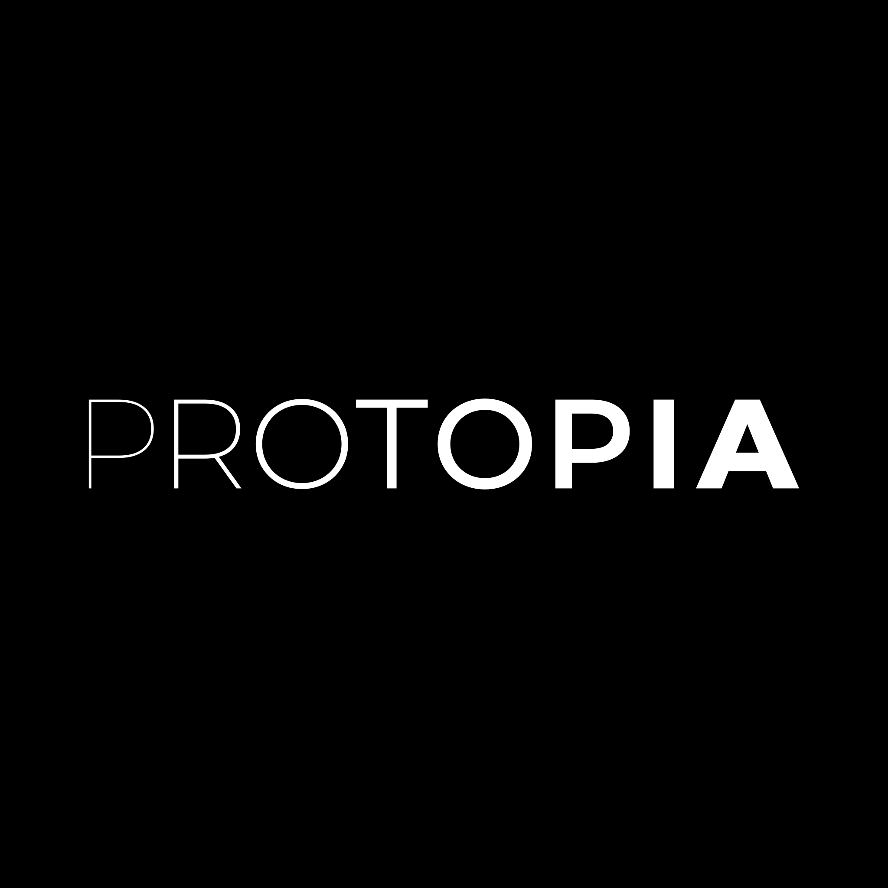

·
Konferencja · 16 czerwca 2026 · Warszawa
Świętujemy 200. odcinek podcastu Patoarchitekci. Jeden dzień, trzech gości, jedno nagranie #200 na żywo.
- Łukasz & Szymon
O konferencji
Hey, czołem, kluski z rosołem! Robimy jednodniową konferencję w Warszawie dla architektów, developerów, DevOpsów i engineering managerów, którzy o architekturze decydują bez wstawiania tego w CV pod „visionary".
Na scenie Łukasz & Szymon plus trójka gości, którzy wcześniej byli w Pato na mikrofonie. Tematy konkretne, bez marketingu. Na koniec dnia nagrywamy 200. odcinek na żywo - wszyscy na scenie. Na sali spotkacie też innych byłych gości podcastu, więc networking robi się sam, bez speed datingu z badgem na szyi.
Dwieście odcinków to wasza zasługa. Gdybyście nie słuchali, dawno byśmy skończyli na 12. Dzięki. Warszawa czeka.
PS. Rosołu na lunchu nie będzie. Sorry.
Agenda · Timetable
Od kawy o 8:00 do panelu dyskusyjnego po nagraniu #200. Prelekcje ~40 min, przerwy prawdziwe, lunch długi. Kolejność może się jeszcze kosmetycznie przesunąć.
08:00 - 09:00
Przerwa
Godzina na ogarnięcie się, kawę i networking na dzień dobry.
09:00 - 09:30
[Keynote] · bez nagrania
Blok ogłoszeń parafialnych + nienagrywany Q&A z publicznością. Tylko na żywo, bez streamu, bez nagrania.
09:40 - 10:20
Prelekcja · bez nagrania
Wybraliście w głosowaniu, więc nie ma odwrotu. Lista patologii, które wracają jak bumerang pod nowym buzzwordem.
10:20 - 10:50
Przerwa
Rozmowy, narzekanie na legacy.
10:50 - 11:30
Prelekcja · bez nagrania
Najważniejsze decyzje podejmujemy, gdy jesteśmy najgłupsi. Lepiej projektować pod usunięcie niż pod utrzymanie.
11:40 - 12:20
Prelekcja · bez nagrania
„Kto to panu tak... napisał?" Po 25 latach w branży Mariusz wie, że zwykle on sam. I ma z tego wnioski.
12:20 - 13:20
Lunch
Jedzenie i budowanie koalicji. Jak w brownfieldzie - 80% sukcesu to ludzie.
13:20 - 14:00
Prelekcja · bez nagrania
Myślałeś, że observability ma 3 filary? Jest 2026 - obudź się. Profile wchodzą do gry.
14:00 - 14:10
Przerwa 10 min
Szybka kawa, szybka toaleta, szybka zmiana speakerów.
14:10 - 14:50
Prelekcja · bez nagrania
Kubernetes miał ukryć złożoność. Ukrył - tylko że wybucha piętro niżej, zazwyczaj o 3 w nocy.
14:50 - 15:10
Networking
Chwila na rozmowy - ekipa ustawia scenę pod nagranie #200 LIVE.
15:10 - 16:30
Nagranie LIVE
Odcinek dwusetny nagrywany na żywo - bez cięć, bez cenzury, ze wszystkimi przejęzyczeniami. Wszyscy prelegenci razem na scenie.
16:30 - …
Po konferencji
Nie uciekajcie od razu - najlepsze rozmowy dzieją się po.
Prelegenci
Kliknij prelegenta, żeby zobaczyć bio i LinkedIn.
W cenie biletu
Każdy z nich już się na tym sparzył. Dawno skończyli czytać cudze post-mortemy - mają już własne.
Keynote, Q&A, wszystkie prelekcje - lecą tylko raz. Nagrywany jest tylko finałowy odcinek #200.
Mikrofon, publiczność, bez drugiego taku. Będą przejęzyczenia - i zostają.
Bez small talku o pogodzie. Raczej: co ci padło, czym to skleiliście i czy żałujesz.
Lunch, kawa, przekąski. Deploymentów na głodniaka nie polecamy.
Dostęp do dedykowanego kanału przed, w trakcie i po konferencji. Pytania, linki, followup, memy z backstage'u.
Data i miejsce
Bilety
Cena nie zmieni się wraz ze zbliżaniem się konferencji. Ale liczba biletów jest ograniczona.
Jeden dzień
359 zł netto
netto · 441,57 zł z VAT (23%)

protopia.tech →Protopia - doradztwo technologiczne dla liderów, którzy chcą podejmować decyzje oparte na faktach, nie na trendach.
Pracujemy z zespołami IT na każdym etapie - strategia, architektura, implementacja, optymalizacja, szkolenia.
Obszary